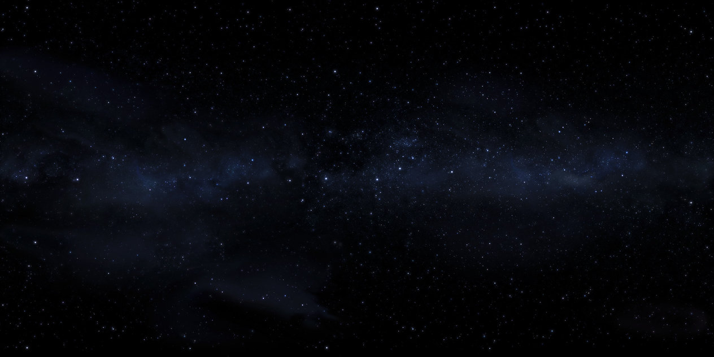

A dark screen
- A blink of light, and a webpage loads.
- Wikipedia. Floating in a virtual viewport in front of user. An article
- History of astronomy. "We used to think earth was center of universe."
- "Our understanding changed".
- Another webpage loads.
- An old news broadcast on the beginnings of the internet...
- Another webpage. Steve Jobs introducing iPhone. "The internet in your pocket".
- ...Fade to black
..

..

A blinking prompt
- http://www.thefutureoftheweb.com
- Press Enter
- Blink... GO...
- Glitches and pops and loading and pulsing and movement into the web.
- "2D" becomes "3D". "Page" becomes "World".
..

..


- Structure emerges from chaos...
- Wireframes resolve, white on black. Like the holodeck.
- A stage forms, and holds... Pulsing, doing something... Loading...
..


..

A transition
- The edges of the stage peel apart, fragment, flaking away...
- Like a cocoon disolving...
- Revealing something beyond...
..
..


A world
- "Whoa" moment... The first time we have ever seen the VR web...
- We are standing in a great wide open world...
- We are looking around... it is 3D, immersive. Sounds echo in the distance.
- There is movement, and life. Clouds, water ripples, birds...
- Music can be heard faintly...
..

..


- We look, and the world responds (eg plants grow where our gaze falls)
- We touch, and the world responds (eg ripples on water where we click)
- We lean forward, and we fly...
- Skimming over the surface of the land... flying over water, then land...
- Feeling the sensation of movement, and taking in the beauty...
..
..
Discovery
- A light in the distance...
- We move towards it...
- It draws nearer, and is revealed to be a doorwawy. A portal...
- We step into it...
..
..
Transported
- The world distorts and ripples
- We are aware of whooshing through space
- The old world falls away
- And a new one resolves
..
..
Exploring the next world
..
..
Jumping back to the previous world
- We step back towards the portal that brought up to this world. TODO: interaction specifics.
- We warp back into the landing world...
..
..
Night time
- We are standing in moonlight...
- The time of day has changed while we were through the portal... It is nighttime now. A moon is overhead. It casts a white blue light over the landscape and ripples on the water...
- Another light is visible in the distance...
- We move towards it...
..
..
We discover another portal
..
..
We step through it, into another world
..
..
Exploring this world
..
..
Jumping back to the previous world
- We step back towards the portal that brought up to this world. TODO: interaction specifics.
- We warp back into the landing world...
..
..
Another light in the distance
- We are standing in the rain...
- It is daytime again, but fog and rain surrounds us...
- Another light is visible in the distance...
- We move towards it...
..
..
We discover another portal
..
..
We step through it, into another world
..
..
Exploring this world
..
..
Jumping back to the previous world
- We step back towards the portal that brought up to this world. TODO: interaction specifics.
- We warp back into the landing world...
..
..
A voice
- A presence tells us we have discovered all three worlds
- The presence makes itself known... Introduces itself...
- It joins us! This is how we get our HUD.
- TODO: specifics
..
..
Trying out the HUD
- The HUD lets us do TODO
- We try it out for the first time...
- We tap on a bookmark...
- The world shimmers, and we are transported...
..
..